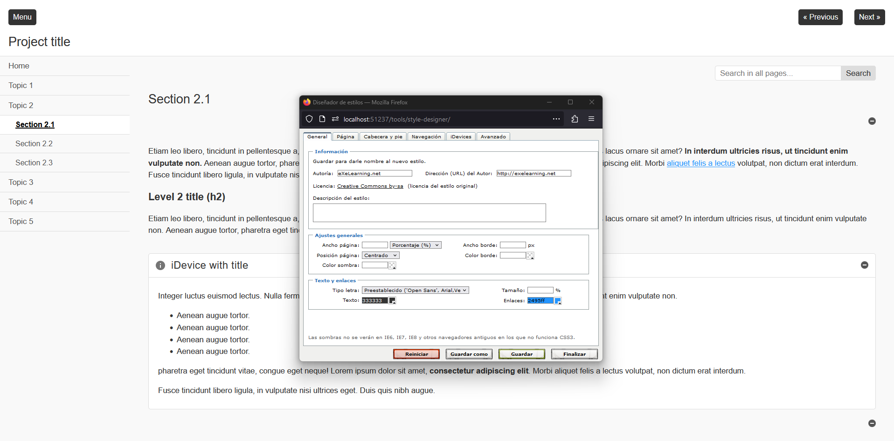

3.4. Practicamos...
1. ... a exportar e importar y viceversa
Vamos a realizar ver cómo se extraen páginas de un ELP para importarlas en otro o, simplemente, tenerlas como plantilla para futuros proyectos.
Selecciona Otros
Selecciona la página "5. Otros" que actualmente está vacía y exporta la página como otros.elp.
Guarda y deja abierto
Deja el actual proyecto abierto (Guarda si aún no lo has hecho).
Abre la página exportada
Busca en Windows el archivo guardado y pulsa dos veces sobre él.
Se abrirá un nuevo Proyecto con un puerto diferente (puede que 51236).
Podremos trabajar con dos proyectos a la vez.
Modifica
Realiza modificaciones en el proyecto otros insertando cualquier iDevice con cierto contenido.
Guarda
Guarda el proyecto otros y ciérralo (aunque no es necesario).
Vuelve al principal
Vuelve al proyecto principal.
Importa
Importa el proyecto otros.elp en el actual proyecto (recuerda tener activado el Modo Avanzado).
Reorganiza
Una vez insertado, reorganiza el proyecto para colocarlo en su lugar correspondiente.
Guarda
Guarda el proyecto.
2. ... mostrar y ocultar iDevices por defecto
- Activa el modo avanzado si aún no lo has hecho
- Pulsa en iDevices disponibles y marca/desmarca los iDevices que consideres.
- Guarda los iDevices que has marcado y/o desmarcados.
- Observa el cambio.
3. ... la creación de estilos
Vas a crear tu propio estilo siguiendo estos pasos:
Paso 1: Modo avanzado
Activa el Modo avanzado si aún no lo has hecho.
Paso 2: Gestor de estilos
Pulsa en el menú estilos para acceder al Gestor de estilos.
Paso 3: Crear estilo nuevo
{kind=link}
En la ventana que aparece, pulsa sobre el botón Crear estilo nuevo.
Paso 4: El diseñador
El diseñador de estilos mostrará los cambios que se realicen en las diferentes pestañas.
{kind=link}
Comienza por la pestaña General.
Paso 5: General
- Escribe tu nombre como Autor/a del nuevo estilo.
- Deja la dirección URL tal y como está o borra el contenido.
- En la descripción puedes indicar por ejemplo que el estilo utiliza los colores corporativos de tu Centro, tu ciudad, etc...
- Piensa en los colores que van a conformar tu página.
- Indica los ajustes generales de tu proyecto. Prueba con estos ajustes:
- Ancho página: 90% (lo normal es dejar "algo de espacio" en los laterales)
- Ancho borde: menos de 5 px para no hacerlo demasiado ancho.
- Posición: centrado (si es menos del 100%)
- Color borde: elige uno que haga juego con los colores que tienes pensados.
- Color sombra: por defecto (o no, tú decides)
- Ahora, decide el tipo de texto y los diferentes colores. Por ejemplo:
- Tipo de letra: elige la que más te guste
- Tamaño: 100% y vacío es lo mismo e indica el tamaño normal de la letra. Más de 100 la aumenta y, menos, la disminuye.
- Color de texto: por defecto (o no, tú decides)
- Color de los enlaces: elige uno que haga juego con los colores que tienes pensados.
- Pulsa Guardar y continúa.
Paso 6: Página
- Elige el color del fondo (ojo, de la parte externa a la página con los contenidos).
- Puedes usar una imagen que se repita en el fondo a modo de tapiz (no lo vamos a hacer por falta de tiempo). Habría que indicar que Sí se repite y la posición donde comienza.
- Elige el color del fondo de los contenidos. Aquí también se puede elegir una imagen.
- Elige el color y estilo para la barra de búsqueda (si la hubiera). Se pueden dejar los valores por defecto.
- Pulsa Guardar y continúa.
Paso 7: Cabecera y pie
- Indica el alto para el encabezado. Por ejemplo: 90px.
- Al igual que en ajustes anteriores, se puede seleccionar una imagen como tapiz o, incluso, como logotipo (en este caso, no debería repetirse y estar localizada en una posición determinada).
- Indica un color para el fondo y otro para el borde.
- Si muestras el título del proyecto, deberás elegir diferentes apartados para su presentación (tipo de letra, color de texto y sombra, alineación, tamaño y margen superior). También puedes desear no mostrarlo porque hayas decidido colocar un logo.
- Para el pie de página se podrán modificar los colores y algún que otro ajuste pero no su tamaño.
- Pulsa Guardar y continúa.
Paso 8: Navegación
Estos ajustes afectarán a la manera en la que un usuario puede interactuar con el proyecto:
- Si existirá menú o no y cómo, horizontal o vertical.
- La apariencia del menú, si existiera.
- Uso de iconos o palabras y sus estilos.
Cambia lo que consideres y guarda para continuar.
Paso 9: iDevices
Afectará al estilo de la caja que forma cada iDevice. Podremos cambiar dos tipos de iDevices: los destacados y los no destacados (texto libre, ...)
Prueba a jugar con los diferentes valores y observa los cambios.
Guarda y continúa.
Paso 10: Avanzado
Este bloque está reservado a los usuarios avanzados en conocimientos HTML y CSS.
Pulsa Finalizar para guardar los cambios, cerrar el diseñador y volver al proyecto.
Obra publicada con Licencia Creative Commons Reconocimiento Compartir igual 4.0